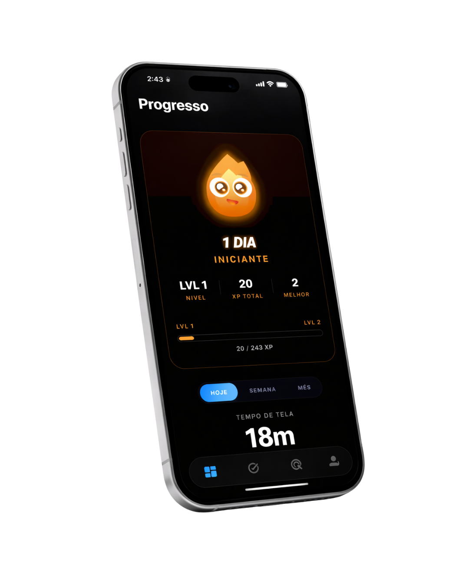

Defina o que importa
para você hoje.
Escolha o objetivo da rotina (estudar, trabalhar, dormir), os horários e os apps que ficam fora do ar nesse período. Use presets de Pomodoro ou monte do zero — em menos de um minuto.

O Orbe assume
quando você não consegue.
No horário definido, os apps que te distraem ficam indisponíveis. Sem brecha fácil, sem desculpa. Você pode iniciar sessões manuais de Pomodoro a qualquer momento — o bloqueio é automático.

Cada dia conta —
e o seu cérebro percebe.
Ganhe XP por cada sessão, cada tarefa concluída, cada noite no horário. O streak diário multiplica seus ganhos e cria a tração que te tira do ciclo de "começar e abandonar".

Projetos grandes,
divididos em vitórias diárias.
Transforme metas longas — passar no vestibular, lançar o TCC, terminar o curso — em trilhas com marcos e subtarefas. Veja seu progresso visual e saiba sempre qual é o próximo passo.